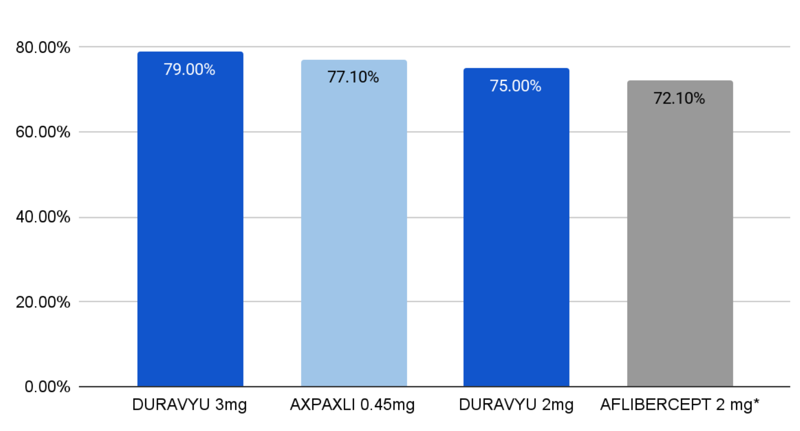
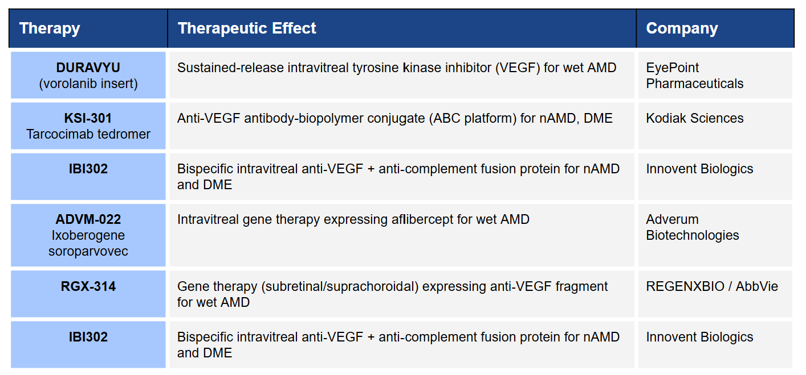
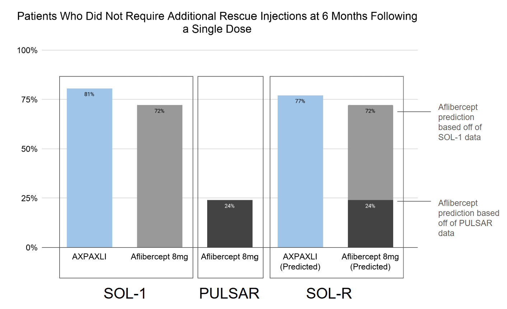
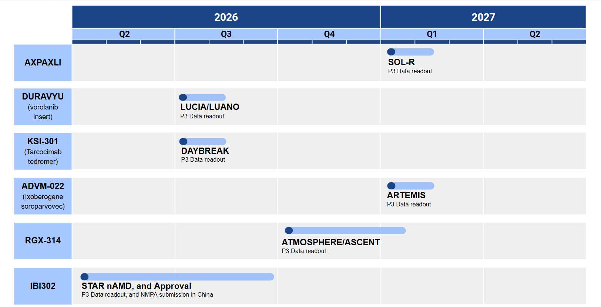

Executive Summary
- Company: Ocular Therapeutix
- Ticker: OCUL
- Indication: Wet AMD
- Lead Asset: AXPAXLI (OTX-TKI)
- Stage: Phase 3 (SOL-1/SOL-R)
- Next Catalyst: SOL-R Phase 3 topline data (expected early 2027).
Disease Biology
Pathophysiology summary
Neovascular (wet) age-related macular degeneration (AMD) is driven by pathological choroidal neovascularisation beneath the macula. Age-related changes in Bruch's membrane, choroidal perfusion decline, and local hypoxic stress promote upregulation of vascular endothelial growth factor (VEGF). VEGF signalling induces the growth of fragile, permeable vessels that leak fluid and blood into the subretinal and intraretinal space.
Vision loss is not caused by neovascularisation alone, but by the downstream consequences: exudation, haemorrhage, and eventual fibrovascular scarring. Recurrent fluid accumulation disrupts photoreceptor architecture, increasing hypoxic stress further in a vicous positive feedback cycle that accelerates irreversible structural damage. Over time, cumulative episodes of exudation drive progressive visual decline.
Current Standard of Care
The introduction of intravitreal anti-VEGF therapy has transformed wet AMD from an uncureable blinding disease to a manageable chronic condition. Agents such as aflibercept, ranibizumab and more recently faricimab suppress VEGF signalling, therefore reducing vascular permeability.
This standard of care is backed by a huge volume of very strong trial data that clearly demonstrates anti-VEGF therapy preserve and even improve vision. This proven record of clinical trials combines with the fact that nearly all newly diagnosed AMD patients are candidates to allow anti VEGF therapy to dominate as the standard of care since its introduction in 2004 to the present.
Limitations of current therapy and why "Durability" matters
Despite this, anti-VEGF therapy is not without its limitations. Firstly it is a suppressive, not curative therapy. Disease activity recurs when drug levels fall and as a result, visual outcomes correlate closely with treatment intensity and injection frequency. In real-world practice, undertreatment is common due to the burden of frequent clinic visits and the nature of the delivery mechanism being unpleasant for patients. Fewer injections lead to recurrent fluid, fluctuation in OCT anatomy, and gradual visual decline. This treatment burden is substantial: frequent intravitreal injections, repeated clinic visits, elderly multimorbid patients, and constrained service capacity. These limitations aren't theoretical either, real-world data consistently show worse AMD outcomes than trials AMD trials (e.g. MARINA, ANCHOR) due to the lack of closely monitored and enforced regular clinic visits in real clinical practice.
For retina specialists, durability determines whether vision gains seen in trials can be sustained outside them. Durability is therefore a viable, measurable metric that correlates with real word outcomes.
Unmet need
The central unmet need is reliable, extended VEGF suppression without sacrificing disease control and stability. Clinicians want predictable disease arrest, fewer recurrences, and longer injection intervals without rebound activity. Durable therapy is valuable not because VEGF biology is in doubt, but because sustained suppression is operationally difficult in a chronic disease, particularly where the operational challenge of administration involves patients receiving regular lifelong injections directly into their eyes. The important question that analysis of AXPAXLI needs to answer is therefore:
Can vision be maintained while meaningfully reducing injection frequency?
Mechanism of Action
Biological Target
VEGF is a secreted signalling protein that drives angiogenesis by binding to tyrosine kinase receptors (VEGFR-1, 2, 3) on endothelial cells, activating transcription factors such as NFAT, AP-1, and EGR-1 that regulate cell migration and neovascularisation. AXPAXLI is an investigational, bioresorbable intravitreal hydrogel implant delivering a small-molecule tyrosine kinase inhibitor (TKI) intracellularly, blocking VEGFR-1, 2, 3 receptor phosphorylation and downstream signalling. Unlike conventional anti-VEGF therapies, which act extracellularly by neutralising VEGF ligands, AXPAXLI targets the receptor itself.
Pathway Rationale
Intracellular blockade offers three key advantages:
- Enhanced durability: Small-molecule TKIs can be densely loaded into Ocular Therapeutix's ELUTYX™ hydrogel, allowing prolonged retinal tissue exposure. In contrast, large extracellular antibodies are rapidly cleared, necessitating more frequent injections.
- Complete inhibition: High VEGF loads can overwhelm extracellular therapies, reducing free drug levels below therapeutic thresholds. Evidence from the HARBOUR trial suggests increasing ranibizumab dose beyond 0.5 mg does not improve outcomes, hinting at a ceiling effect for extracellular blockade.
- Single point of failure: Extracellular VEGF-A inhibition can trigger compensatory upregulation of VEGF-C and D. Targeting intracellular VEGFRs reduces the potential for pathway escape via redundant isoforms.
Is Target Validated?
Extracellular VEGF blockade is a well-validated target; inhibition is both necessary and sufficient to suppress neovascularisation demonstrating irrefutable causation. Intracellular VEGFR inhibition, however, has not yet been validated in the retina. While TKIs like axitinib are established in oncology, their local retinal delivery is unproven, however phase 1 and 2 trial data has shown AXPAXLI to be none inferior to current extracellular delivery mechanisms giving huge credibility to Ocular Therapeutix claims regarding the success of an intracellular blockade.
Mechanism-Specific Risks
Sustained intracellular VEGFR inhibition introduces theoretical risks distinct from intermittent extracellular ligand neutralisation. Continuous receptor blockade may increase the probability of off-target kinase effects, particularly given the broader inhibitory profile of small-molecule TKIs. Prolonged suppression of VEGF signalling raises the possibility of retinal toxicity or maladaptive vascular remodelling over time. Chronic intraocular exposure to the hydrogel could also promote low-grade inflammation or fibrotic remodelling. While clinical trials monitor safety closely, long-term biological consequences of continuous intraocular VEGFR inhibition are inherently difficult to exclude in early follow-up. These risks remain theoretical but mechanistically plausible however it is unlikely that any evidence regarding these long term effects will be available during the ongoing trials phase.
Trial Design
- Trial Name: SOL-R (NCT06495918)
- Phase: 3, Double-masked, randomised (2:2:1)
- Population: 555 (down from original plan of 825 following re-powering of study after release of early SOL-1 data)
Arms:
- AXPAXLI q6 months
- Aflibercept 2 mg q8 weeks
- Aflibercept 8 mg q6 months (masking arm)
Primary Endpoint: Best Corrected Visual Acuity (BCVA) at week 48.
The Critique
Endpoint analysis
When evaluating the SOL-R trial, it is important to remember that the study primarily measures visual acuity outcomes. However, as previously discussed, to accurately assess the probability of clinical success and adoption, the key question is: Can vision be maintained while meaningfully reducing injection frequency?
This distinction is crucial. Are far more interesting metric in determining success would be frequency of required rescue therapies. This is clearly evidenced with the 25-35% drop in Ocular therapeutix stock price in mid February following the announcement that AXPAXLI had met it's superiority endpoint in the phase 3 SOL-1 trial. The primary endpoint was maintained BCVA, however investors would have been far more interested in whether AXPAXLI showed significant improvements in durability. Although AXPAXLI demonstrated good rescue free rates at 24 weeks, the comparator arm also demonstrated very strong rescue free rates, these results likely shook investors confidence that AXPAXLI would demonstrate enough of an edge in an already competitive market and likely explains the fall in stock price despite the positive results. In practice, the commercial threshold for success is likely higher than the regulatory threshold, meaning the trial's significance will depend on careful interpretation of all the data rather than simply whether the primary endpoint is met.
Comparator Appropriateness
The comparator arms are appropriate and reflect current clinical practice. Aflibercept 2 mg every 8 weeks is a widely used standard therapy and provides a reliable benchmark. While Faricimab, which can achieve extended dosing intervals, was not included, this is partially offset by the inclusion of a high-dose Aflibercept 8 mg arm. The PULSAR study demonstrated that after two years, 88% of patients on Aflibercept 8 mg were maintained on 12-week or longer intervals, broadly comparable to Faricimab durability.
Including both standard and extended-interval comparators allows for meaningful assessment of durability under the same trial conditions. The high-dose arm will be particularly informative as the SOL-1 trial data demonstrated very strong durability data at 24 weeks following a single dose of just 2mg. In this new trial any improvement in Aflibercept performance using an increased dose will further reduce any potential benefit that AXPAXLI could hope to demonstrate.
Superiority vs Non-Inferiority
The trial is designed to demonstrate non-inferiority, which is reasonable in wet AMD given the efficacy of existing therapies. Reduced effectiveness outside trial settings is often due to treatment burden and dosing frequency challenges. Maintaining visual outcomes with fewer injections could represent a meaningful clinical improvement.
Nonetheless, the non-inferiority margin should still be carefully considered. If too permissive, the trial could meet its primary endpoint despite differences in visual acuity that clinicians and patients would consider clinically significant, potentially limiting adoption even if superior durability is demonstrated.
Power and Sample Size Assumptions
The SOL-R trial originally targeted 825 patients, but final enrolment was approximately 555 after incorporating long-term SOL-1 safety data. This amendment allowed the study to maintain adequate statistical power while reducing the cohort size. However, smaller numbers increase sensitivity to variability, making assumptions based on prior anti-VEGF trials somewhat riskier.
Risk of Bias
The randomised, masked, multi-arm design mitigates many common sources of bias. Dosing interval differences between arms could, however, introduce subtle unmasking risks if visit schedules diverge. While the ClinicalTrials.gov entry does not list secondary endpoints, company protocols indicate that outcomes related to durability, anatomical response, and safety are captured. Since durability is not the primary endpoint, careful interpretation of these secondary outcomes is required to avoid potential analytical flexibility in reporting.
It is also worth noting that SOL-R includes a 24-week screening period that excludes patients with high fluctuations in retinal fluid observed on OCT. In real-world practice, dosing intervals may therefore need to be reduced, potentially diminishing the proposed durability benefit. In the US over half of patients are initiated on bevacizumab first-line due to cost so an incremental improvement in durability is likely to disappear once the drug hits the market, clinicians will be aware of this and will adjust their preferences accordingly.
Endpoint Analysis & Real world application
When evaluating the endpoints for the SOL-R trial, it is useful to begin with the recently published SOL-1 topline data. These results provide an early framework for understanding the absolute and relative effect sizes that may emerge from SOL-R, and how these could influence clinician adoption and real-world use. Ocular Therapeutix have not published SOL-1 data from 24 weeks and so comparisons must be made from the primary endpoint results which were published at 36 weeks. Interestingly rescue free rate data was published at 24 weeks which is more comparable to both the SOL-R trial and also to AXPAXLI proposed dosing interval in real life.
SOL-1 Topline Data
- BCVA Maintenance: At Week 36, 74.1% of AXPAXLI patients maintained vision (<15 ETDRS letter loss) compared with 55.8% with Aflibercept.
- Rescue-Free Rates: Week 24 80.6% of AXPAXLI patients remained rescue free vs 72.1% of Aflibercept patients.
- Exploratory SOL-R Rescue Criteria: Applying the stricter SOL-R criteria (>5-letter BCVA loss plus ≥75 μm increase in CSFT), 77.1% of AXPAXLI patients would have remained rescue-free at Week 24. Ocular therapeutix did not publish data on how Aflibercept would have fared under the SOL-R criteria.
By Week 36 the rescue free rate gap widened to 74.7% versus 56.4%, and at Week 52 to 68.8% versus 47.7%. These differences suggest that disease control may persist for longer following a single implant. But the more important metric to note is the 80.6% vs 72.1% rescue free rates at 24 weeks. This data raises significant concerns that AXPAXLI durability improvement may be a marginal increase not a stepwise improvement.
It was interesting that Ocular Therapeutix also reported that when the SOL-R rescue criteria are retrospectively applied to SOL-1 data, 77.1% of treated patients would have remained rescue-free at Week 24. This supports the six-month re-dosing interval used in the SOL-R design but notably lacks a direct comparison to how Aflibercept 2mg would have performed under the SOL-R rescue criteria. If this data is released it will be crucial to estimating SOL-R outcomes in both the Aflibercept 2mg and Aflibercept 8mg 26 week arms will perform.
Ultimately, AXPAXLI will enter a crowded therapeutic landscape characterised by substantial clinician prescribing inertia. For a new therapy to meaningfully alter practice patterns, any improvements in durability will need to be sufficiently large to outweigh the comfort and familiarity clinicians have with established anti-VEGF agents. In particular, adoption will depend not only on demonstrating extended treatment intervals, but on doing so with convincing efficacy and safety signals in the context of far more limited long-term safety data compared with therapies that are already widely used and well understood in routine clinical practice.
Safety Profile & Tolerability
The SOL-1 data provide an early indication of the potential safety profile of AXPAXLI, although several important questions remain unresolved. Reassuringly, no major safety signals were reported. In particular, there were no cases of endophthalmitis, retinal vasculitis, or retinal detachment. The absence of these complications is important, as even rare events of this type can rapidly undermine clinician confidence and significantly limit both regulatory approval and real-world adoption in retinal therapeutics.
Two notable adverse events that were reported more frequently in the AXPAXLI arm were: vitreous floaters and cataract formation. Although the overall incidence remained low, rates were higher than in the Aflibercept comparator group. Vitreous floaters are generally a minor inconvenience but may affect patient comfort and satisfaction following implantation. Cataract formation is also not unexpected in this population, as intravitreal procedures themselves can contribute to lens changes, particularly in the elderly patients typically affected by neovascular age-related macular degeneration.
The key unresolved safety question relates to repeated dosing. SOL-1 evaluated the effects of a single AXPAXLI implant following an Aflibercept loading phase, meaning the long-term impact of repeated hydrogel implantation remains uncertain. Adverse events that appear clinically acceptable after a single exposure could theoretically accumulate with chronic use.
For this reason, the safety outcomes from SOL-R will be particularly important. Clinicians will be watching closely to determine whether repeated exposure to the hydrogel delivery system leads to increasing complication rates over time. If complication rates rise with repeated dosing, the potential benefits of improved durability may be offset by concerns regarding procedural burden and patient tolerance, limiting enthusiasm for adoption despite promising efficacy signals.
Competitive Landscape
The treatment landscape for neovascular AMD is dominated by anti-VEGF intravitreal injections, the most widely used agents include Aflibercept, Ranibizumab, Faricimab, and off-label Bevacizumab. In real-world practice, dosing intervals typically range from six to eight weeks, highlighting a gap in treatment burden that AXPAXLI aims to address with its proposed 26-week dosing interval.
Intra-Class Pipeline Competition
The intra-class therapeutic with the closest comparable delivery mechanism is Duravyu (EYP-1901, Vorolanib intravitreal insert) which has already demonstrated strong phase 2 data with phase 3 data reporting later this year. These drugs both have the same value proposition (their durability) and the rivalry has been fierce enough, that as of writing this, EyePoint have filed a lawsuit against Ocular alleging deformation. It's clear that both companies understand the precarious nature that they are in. Performing a full breakdown of Duravyu is beyond the scope of this piece but the key piece of data to review for meaningful analysis is the comparison of rescue free rates between the drugs. When you apply the same criteria for initiating rescue therapy (BCVA reduction ≥5 letters and CST increase ≥75 µm) to both AXPAXLI and Duravyu you can see how tight the competition for best durability really is.

Note that in the graph the data regarding Aflibercept was based on more lax criteria for initiating rescue therapy (BCVA reduction ≥15 letters) and therefore if the more strict criteria used against Duravyu and AXPAXLI were applied it is possible that this number would drop.
Inter-Class Pipeline Competition
Gene therapies, such as RGX-314 and ADVM-022, aim to deliver long-term intraocular VEGF suppression from a single procedure. While these therapies face significant cost and safety hurdles, they highlight the competitive pressure on durability as a differentiator. Incremental improvements may not be sufficient; a step-change in durability, ideally months ahead of existing therapies, will be required to shift clinician prescribing patterns and justify adoption of AXPAXLI. Attempts have been made to prolong the durability of standard monoclonal antibody anti-VEGF therapies such as KSI-301 which relies on an antibody biopolymer conjugate platform to deliver anti-VEGF monoclonal antibodies with large molecule phosphoryl-choline polymer in an attempt to reduce drug clearance and achieve 6 month durability. There is also proven data from bi-specific agents such as IBI302 (also known as efdamrofusp alfa) which targets both complement and VEGF pathways simultaneously. Although their phase 3 data only demonstrated 73% of patients reaching a 16 week dosing interval this still demonstrates how advancements in other therapeutic classes could reduce any potential improvement in durability that AXPAXLI hopes to achieve.

Cost Competition
Clinicians are cost-sensitive, which explains the widespread first-line use of off-label Bevacizumab despite the availability of more efficacious alternatives. This cost competition rather than durability competition approach was used by Samsung Bioepis and Bioeq AG who developed biosimilars Ranibizumab-nuna and Ranibizumab-eqrn. These therapies aimed to increase clinician uptake by reducing treatment costs rather than improving durability. This pricing pressure raises the adoption threshold for premium therapies that do not demonstrate clear clinical advantages.
Adoption Analysis
Clinician adoption is one of the most difficult questions to evaluate but also one of the most commercially important. Based on clinical experience, switching to a new therapeutic agent represents a significant behavioural barrier for physicians. For clinicians to change prescribing habits, either the barrier to switching must be low or the perceived benefit must be sufficiently large to justify the disruption.
To evaluate the likelihood of adoption, this analysis breaks the switching decision into four practical hurdles: clinician switching behaviour, durability benefit, workflow disruption and payer dynamics.
Switching Behaviour – Do Retina Specialists Switch Drugs Easily?
In practice, the answer is generally no. Visual outcomes in neovascular AMD are already strong with existing anti-VEGF therapies, reducing the urgency for clinicians to change established treatment pathways.
Bevacizumab illustrates this point well. Despite being substantially cheaper than branded alternatives, multiple trials have demonstrated that it provides comparable visual outcomes. Head-to-head studies including CATT, IVAN, LUCAS, and GEFAL demonstrated non-inferiority versus Ranibizumab, while SCORE2 and the Swedish Trial showed non-inferiority compared with Aflibercept.
These results reinforce a key behavioural insight: clinicians rarely switch agents when efficacy differences are marginal. Even dosing flexibility may not always drive change. For example, the Rotterdam Hospital study (2013) demonstrated that bevacizumab administered every eight weeks was non-inferior to four-week dosing intervals, further reinforcing the perception that existing agents already provide adequate durability. This creates a high baseline barrier for any new therapy attempting to displace established treatments.
Durability – What Magnitude Drives Switching?
To estimate the durability improvement required to drive adoption, Faricimab provides a useful case study. The TENAYA and LUCERNE trials demonstrated that Faricimab produced non-inferior visual outcomes compared with Aflibercept while enabling substantially longer dosing intervals. At two years:
- ~80% of patients maintained ≥12-week interval
- ~63% achieved the maximum 16-week interval
Despite this meaningful durability improvement, early real-world adoption remained cautious. An IRIS Registry analysis of 17,503 eyes presented at ASRS 2023 found that approximately 67% of switches occurred from Aflibercept which is already commonly used as a second line agent itself.
Compared with Faricimab 16-week interval, a 26-week schedule would represent a 50% increase in durability. Relative to 12-week dosing, it represents a 100% increase in interval length. These are the exact same dosing interval increases seen with Faricimab over Aflibercept in the TENAYA and LUCERNE trials. Importantly, Faricimab adoption accelerated rapidly once clinicians became comfortable with its durability profile. Within two years of its 2022 approval, Faricimab utilisation surpassed Ranibizumab in the United States. This suggests that meaningful durability improvements can eventually drive uptake, with 50-100% increases in dosing interval being demonstrated as sufficient to drive clinician uptake.
Workflow and Procedural Disruption – What Will Clinics Tolerate?
Retina clinics operate as high-volume procedural environments, and any change that slows clinic throughput is immediately noticeable.
However, from a practical perspective the workflow disruption associated with AXPAXLI is likely limited. The delivery device differs from standard intravitreal injections, but the procedural learning curve is expected to be minimal. Sustained-release intravitreal implants are already familiar to retina specialists through corticosteroid implants such as Ozurdex and Iluvien. As a result, staff retraining requirements would likely be modest. Given the potential reduction in injection frequency, the overall workflow impact may actually be favourable if durability claims are realised.
Payer Friction – Is Adoption Payer Driven?
Payer dynamics represent a major constraint on adoption. The United States accounts for approximately 65% of global anti-VEGF revenue, and insurers frequently require patients to demonstrate inadequate response to lower-cost therapies before approving newer agents.
This policy environment explains the persistent first-line use of bevacizumab despite the availability of more expensive alternatives. While many trials have shown bevacizumab to be non-inferior in visual outcomes, newer agents primarily differentiate themselves through durability rather than efficacy. Similar reimbursement dynamics exist in other big markets like Europe and Japan, where cost containment policies make first-line displacement even less likely.
Consequently, AXPAXLI will enter the market as a second-line therapy, targeting patients with suboptimal response or high treatment burden. This will then focus competition amongst the newer more expensive agents rather than spreading competition across the entire market.
Failure Modes
Managing risk begins with defining and understanding potential failure modes. For AXPAXLI, subtle nuances in trial design, durability, and competitive dynamics will materially influence the probability of success. The following four major areas illustrate the most relevant risks, supported by real-world and trial data.
Endpoint Not Met
The most obvious risk is failure to meet the primary endpoint in SOL‑R. Phase III wet AMD trials typically assess non-inferiority in visual acuity versus existing anti-VEGF therapy. A failure here would almost certainly jeopardise regulatory approval. Fortunately, SOL‑1 has already demonstrated superiority, which reduces the likelihood that SOL‑R will fail its primary endpoint. Nonetheless, any unforeseen variability in the SOL‑R population could still introduce risk.
Marginal Clinical Superiority
Meeting the endpoint is necessary but not sufficient for commercial success. Incremental improvement in dosing interval may fail to drive clinician adoption. The SOL‑1 trial showed strong rescue-free durability for AXPAXLI, but unexpectedly high performance in the Aflibercept 8 mg arm raises uncertainty.

- Comparison: In the PULSAR trial, only ~24% of patients qualified for 24-week dosing with Aflibercept 8 mg, whereas in SOL‑1, 72.1% remained rescue-free at 24 weeks.
- Implication: If SOL‑R mirrors SOL‑1 rather than PULSAR, the dosing interval advantage of AXPAXLI could shrink to ~7%, versus a potential ~200% increase if PULSAR-like performance is observed.
This variability is critical: the magnitude of dosing interval improvement directly drives adoption and market differentiation and currently the SOL-1 data is the more recent and more comparable data favouring a durability increase closer to 7%, far below the 50-100% increase that would significantly move clinician prescribing preferences.
*Note that in the graph the data regarding Aflibercept performance in SOL-1 was based on more lax criteria for initiating rescue therapy (BCVA reduction ≥15 letters) and therefore if the more strict criteria used against AXPAXLI and Aflibercept were applied it is possible that this number would drop.
Safety or Tolerability Signal
Intravitreal therapies carry inherent safety risks, including inflammation, increased intraocular pressure, and endophthalmitis. With AXPAXLI, these risks could be compounded by repeat dosing, as the hydrogel implant remains in the eye over time. Currently, there are no FDA-approved hydrogel-based implants for retinal therapy, meaning the only reliable safety data comes from the single-injection SOL‑1 trial. As a result, projecting safety for repeated hydrogel dosing is highly uncertain, and clinicians will be watching SOL‑R closely for any signals that might impact adoption.
Competitive Data Overshadowing
The wet AMD pipeline is extremely competitive over the next 16 months. If competing agents report similar or superior durability around the same time as AXPAXLI's launch, its perceived differentiation could narrow significantly. I've highlighted some of the most relevant competitors below, along with a timeline demonstrating their upcoming data readouts. This visual shows just how congested the next 16 months will be, and how many opportunities there are for AXPAXLI's SOL‑R results to be overshadowed.

Probability Framework
This framework attempts to estimate the overall probability that AXPAXLI will achieve successful commercial adoption, combining insights and data discussed throughout this deep dive to estimate a tangible probability of success.
-
Probability mechanism works: 95%
This number is derived from a clinical analysis of the data summarised in the disease biology and mechanism of action sections. Fundamentally anti-VEGF therapies are validated in wetAMD and any doubts or questions about the use of an intracellular TKI have been severely minimised by promising data from both SOL-1 and DAVIO 2 trials.
-
SOL-R Trial Success: 90%
This is derived the critique of the trial design with the endpoint analysis. AXPAXLIs strong performance in the more stringent superiority SOL-1 Trial signals very strong signals that the primary endpoint will be met.
-
Probability FDA approval if positive: 90%
The FDA agreed that SOL-R can serve as one of the two "adequate and well controlled" studies needed for an NDA in wet AMD, the first being the SOL-1 trail that has just completed. This means that the main risks to FDA approval come from the safety profiling discussed in the safety and tolerability analysis. Safety outcomes from SOL-1 were acceptable but repeated hydrogel administration is yet to be analysed and therefore questions still remain.
-
Probability meaningful adoption: 40%
This is the area where AXPAXLI could run into problems. In the discussion regarding the competitive landscape and the adoption analysis there are seriously concerns. The competitive landscape is filled with promising alternative agents with key data releases coming throughout the next year. And the discrepancy between durability extension seen over Aflibercept in previous trials (PULSAR) and in the SOL-1 recent topline data leaves questions regarding whether the durability increase seen in SOL-R will be large enough to drive adoption.
Final blended probability of success: 30%
Clinical Materiality Score
- Biological plausibility: 9
- Endpoint strength: 7
- Effect size clinical relevance: 5
- Safety: 7
- Adoption friction: 4
- Commercial durability: 3
Final weighted score: 5.8
What Data Would Change My Mind?
My current view would only materially change with the emergence of data from the following key value inflection points. Positive or negative outcomes in these areas would significantly influence my estimated probabilities of success, and represent the most important data to monitor going forward.
Key Internal Data
- Aflibercept 2mg single dose performance under stricter SOL-R rescue rate criteria
- Early SOL-R data regarding Aflibercept 8mg single dose rescue free rates
Key External Data
- LUCIA/LUANO P3 Data readout
- Daybreak P3 Data readout
- ATMOSPHERE/ASCENT & ARTEMIS Data Readout
Post-Catalyst Update
- Outcome:
- Market reaction:
- My error:
- Over/underconfidence:
- Framework adjustment: